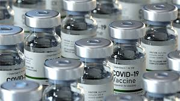
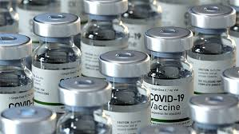
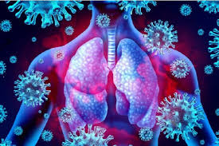
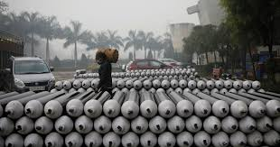
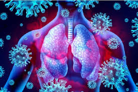
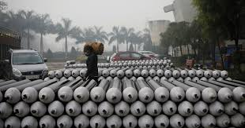
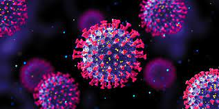

 



The second wave of COVID-19 in India brought unprecedented losses. The poorest and the most marginalized, including women and girls, face more risks without the means to absorb the economic shocks and mitigate the health crisis. They are caring for their families, sustaining livelihoods and leading efforts to fight the pandemic, amidst the threat of a third wave. UN Women and health sector experts answer some frequently asked questions about COVID-19 and how it impacts women and girls in India. Are women and girls at more risk of contracting COVID-19 than men? Over 30 million people have been infected by the coronavirus in India. COVID-19 can infect people of all gender and ages. However, some women and girls may be at higher risk because they are poorer and lack information and resources, or because they are at the front line as caregivers and workers in the health and service sectors. In India, women make up a significant proportion of all healthcare workers and more than 80 per cent of nurses and midwives. Yet, when it comes to decision-making roles in the health sector, they are largely absent, and they get paid much less than their male counterparts. Only 13 per cent of the members of the national COVID-19 task force are women. Since women in India spend more hours caring for children, the elderly and sick family members, and masks and other personal protective equipment are often designed and sized for men, women may be at risk of more exposure to the virus. Right now, there is also a concern that less women are getting vaccinated than men in India – 17 per cent more men than women have been partially or fully vaccinated, and according to national data, there are only two states where more women are taking the vaccine. Because of the fact that women have less access to internet or smart phones, they may not be able to register for vaccination. Due to the prevailing patriarchal norms, women may find it difficult to go to the vaccination centres alone, and there may be preference for male family members to get vaccinated first. There are also myths that vaccines compromise women’s fertility. Unvaccinated women are at a high risk of contracting the disease, especially in the wake of the new variants. How has COVID-19 impacted women’s employment in India? Wage inequality and the burden of unpaid care has pushed more women out of employment and into poverty. Women’s earned income in India was just one-fifth that of men’s even before the pandemic. Globally, and in India, more women have lost jobs during COVID-19. A recent report by the Center for Sustainable Employment at Azim Premji University in India shows that during the first lockdown in 2020, only 7 per cent of men lost their jobs, compared to 47 per cent of women who lost their jobs and did not return to work by the end of the year. In the informal sector, women fared even worse. This year, between March and April 2021, rural Indian women in informal jobs accounted for 80 per cent of job losses. Indian women also spend more time doing unpaid care work at home than men. On an average, they spend 9.8 times more time than men on unpaid domestic chores and 4.5 hours a day caring for children, elders and the sick. During the pandemic, their share of unpaid care work grew by nearly 30 per cent. The socio-economic toll on women and girls have long-term consequences, unless policies and actions deliberately target and invest in women. There is a risk that the exodus of women from the workforce could become permanent, reversing not only gender equality gains, but GDP gains. UN Women data [1] also shows that more girls than boys were left out of school during the pandemic and 65 per cent of parents surveyed were reluctant to continue the education of girls and resorting to child marriages to save costs. This can create an entire generation of young women without education and employment opportunities.
